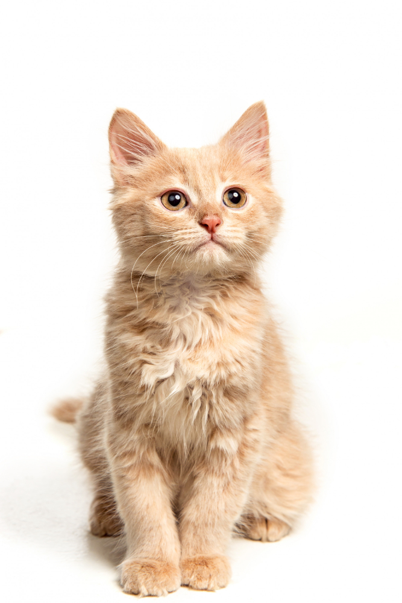
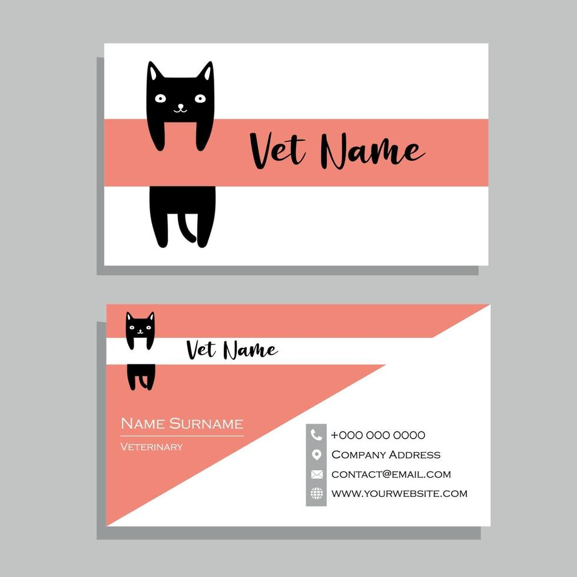
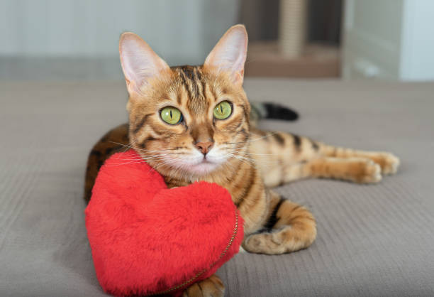

Correo: info@adocat.com.py Correo: info@adocat.com.py |
 Celular: (0972)237-222 Celular: (0972)237-222 |





 Facebook Facebook |
 Instagram Instagram |
 Whatsapp Whatsapp |
 Tik Tok Tik Tok |
Una vez tomada la importante decisión de adoptar uno de los animales de Adocat comienza la fase de entrevista y primer contacto con nuestros animales. Es importante que todos aquellos que vayan a convivir con el animal acudan al Centro de Adopción para así confirmar que todos están de acuerdo con la adopción. Una vez en el Centro de Adopción uno de los voluntarios realizará una pequeña entrevista para conocer la experiencia de la familia con otros animales, el entorno de su vivienda o las condiciones en las que se encontrará el nuevo miembro, entre otras cuestiones. Además, se informará a la familia sobre las condiciones del Contrato de Adopción y se le ayudará a escoger al animal perfecto entre todos los que se encuentran en el Albergue, con el fin de hacer posible una mejor adaptación y una adopción de éxito. El tiempo que ocupa el total del proceso puede variar en función del número de personal disponible, la cantidad de afluencia de posibles adoptantes y la duración de las propias entrevistas.
| Correo: info@adocat.com.py |
Celular: (0972)237-222 |
| Facebook |
Instagram |
Whatsapp |
Tik Tok |